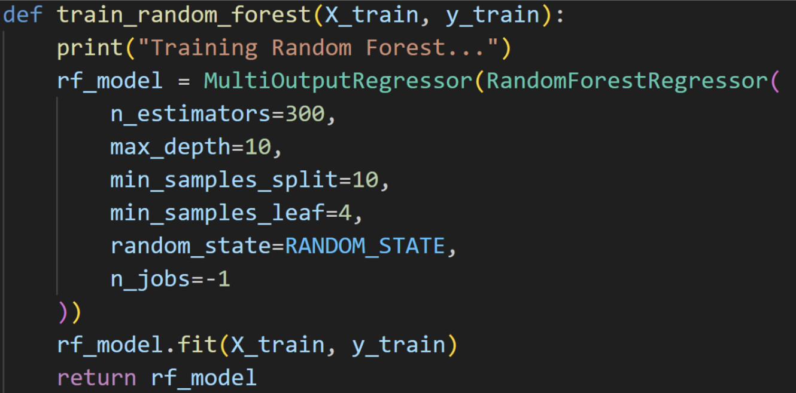

In this project, we are utilising machine learning algorithms to predict the final score and ultimately the winner of NFL games. Through our research into prior studies about the topic, we have identified two primary approaches to predicting NFL game outcomes. The first approach, used by popular sites like ABC’s FiveThirtyEight, utilizes an ELO rating system, which assigns a power rating to each team. According to FiveThirtyEight, “those ratings are then used to generate win probabilities for games, based on the difference in quality between two teams involved” [1]. The ELO ratings are subsequently updated after each game based on the result and how unexpected the outcome was. The second approach differs in that it uses statistics for each team leading up to the game in order to predict the outcome. This type of model relies on analyzing performance data, and it is what our group has chosen to pursue. We have chosen to implement three different types of machine learning models, and we intend to analyze their performance compared to one another. The three types of model implementations we have chosen are gradient boosting, random forests, and neural networks. We hope to find which type of model is most capable of being used to predict the outcome of NFL games.
Our main literature review comes from the University of Michigan, where students used neural networks to predict the outcomes of college football games by running 5 different regression models. This study is trained on years of historical data on various team metrics and tested on live results. Their output shows that Lasso Regression was the most effective predictor; however, there is room for continuous improvement in this space, which we hope to capture by analyzing the NFL rather than NCAA play [2].
The dataset we have chosen contains team data for each game of the NFL season from 2002-2023. Each row is an NFL game and each column is information about the game statistics such as location, scores, team stats, or time of possession. The dataset can be found here:
We have chosen to use the first 20 seasons (2002-2021) as our training set and the last 2 seasons (2022-2023) as the test set.
It is currently difficult to predict the outcome of NFL games due to the complexity of the game and randomness involved. We aim to solve this problem by creating multiple ML models using pre-game statistics to predict the outcome of matchups. In this study we aim to reduce uncertainty in the field of sports forecasting and fill in the gaps of existing research in regards to predicting sports matchups. Through our use of multiple types of ML models, we hope to determine which models are most efficient and effective in terms of their predictive ability. This study has practical and fiscal applications in the fields of sports forecasting, betting markets, and team strategy development.
Before we could begin implementing a machine learning model, we knew we would have to prepare our dataset by performing a significant amount of data preprocessing. Since we are building a predictive model, we needed the data in a format that reflects the information needed when predicting an NFL game.
The original Kaggle dataset contained statistics for individual games that were played between 2002-2023. This includes the time and location of each game, the two teams involved, the final scores, and numerous in-game statistics. However, what we needed was the statistics of each team leading up to the matchup and the final result of the game.
To begin the data-preprocessing, we wrote a Python script that looped through the dataset, summing each team’s statistics for each category leading up to the game. The script then averaged these sums based on the number of games each team had played so far. We combined this information with the final scores from the game which created a new dataset that contained statistics for each team leading up to the game along with the final outcome.
With the data in a format which could be trained and tested on, we quickly realized that the dataset contained too many features for an effective model. We theorized that this was due to the high correlation between many of the features. For example the number of passing yards is highly correlated with the number of passing attempts, so including both of these features would be redundant. To mitigate these concerns, we ran principal component analysis (PCA) on our dataset to reduce the dimensionality. This allowed us to transform our dataset which initially contained 93+ features (many of which were highly correlated) into a new dataset which contained a set of 66 linearly uncorrelated features, called principal components. This allowed us to capture the maximum amount of variance in the data while reducing the dimensionality of the dataset.
After completing the previous steps, we now had a file containing the 66 most important features from our original dataset and we were almost ready to begin training the model. However, one more preprocessing technique was required to perform. Within the data, many features contained differing units, resulting in differing ranges of possible values. For example passing yards per game for a given team might typically range between 150-350 yards per game, while fumbles recovered per game could fall in the range of 0-3 turnovers per game. Without addressing this issue, the model would have issues evaluating the relative importance of these features, as it couldn’t distinguish that a team having 1 more turnover per game is much more significant than a team having 1 more passing yard per game.
To resolve this, we standardized each feature. From the original dataset, we had noticed that each feature roughly followed a bell curve, indicating each could be represented by a Guassian distribution. Knowing this, we standardized each feature so that it was represented by a Gaussian distribution with a mean of 0 and a standard deviation of 1. Each datapoint was transformed into a value representing how many standard deviations above or below that team was in terms of the average among the entire dataset. With the final step complete, the data was now ready to be fed into our different model implementations.
Our first machine learning implementation was a gradient boosting model, a technique where multiple smaller models are combined into a larger, more powerful model by iteratively training each one based on the mistakes of the previous one. This strategy of combining multiple models into one is known as an ensemble machine learning model. Our specific implementation used XGBoost (Extreme Gradient Boosting), which is a python library that utilizes gradient-boosted decision trees. This model is a type of supervised learning model, since it is trained on a labeled dataset.
Initially, we tried to create a single model to predict both home and away scores. However, our testing revealed better accuracy when we used two different models, one to predict the away score and another to predict the home score.
In order to achieve the optimal results, we fine-tuned several hyperparameters in the model. We first specified the objective as squared error which indicates that we are creating a regression model aimed at minimizing the squared error between predicted and actual scores. The n_estimators parameter controls the number of trees that are used in the model, and increasing this value from 100-1000 produced more accurate results. We also lowered the learning rate to 0.01, which allows for the model to converge more slowly and smoothly. We then tested the model on different values for the maximum tree depth between 4 and 10, but found that a value of 10 produced the best predictions. This makes sense considering a larger maximum tree depth would allow each decision tree to capture more complex relationships in the data. To further mitigate overfitting, we adjusted minimum child weight, subsample value, and column sample which work together to limit the number of splits that can occur and add randomness to the model.
The next machine learning model we implemented was a random forest model. Random forests combine multiple decision trees, and ultimately employ a bagging method: each decision tree is created by sampling a random subset of records from the data, and each split within trees is decided by sampling a random subset of features. The algorithm aggregates these outputs and provides a final prediction. This has the implication that Random Forests fares well at handling outliers, which were present in our dataset.
As for data preprocessing, we removed the most recent season from the dataset to use as a test set. Random Forests do not require any scaling or normalization due to the nature of the algorithm. Instead, it splits the data at a specific value for each feature. Random Forest also does not require a lot of feature reduction. The only reason we would have applied, say PCA, is to speed up computational time, but this was not a pressing issue. We initially utilized RandomForestRegressor from sklearn to accomplish the implementation of the algorithm. The first iteration of this, used the following hyperparameters: max_depth = None, n_estimators = 100, min_samples_leaf = 1, min_samples_split = 2. And it yielded favorable results, with a win/loss prediction accuracy of 56.88%. After this, we wanted to optimize our hyperparameters, so we applied a grid search, which successfully found us the optimized hyperparameters: max_depth = 10, min_samples_leaf = 4, min_samples_split = 10, n_esimtators = 300. The model went up to 57.62% accuracy. The last thing we tried was to pivot to implementing Adaboost, another ensemble learning algorithm, which instead uses weak learners, or shallow decision trees. Instead of a bagging method, Adaboost also uses a boosting method, meaning that instead of aggregating predictions from multiple simple models, these simple models work together throughout the process to make a single prediction. We also knew that Adaboost is sensitive to outliers (which were plentiful in our dataset), but we attempted it anyway. Using the AdaboostRegressor from sklearn with the following parameters: n_estimators = 300 and learning_rate = .1, the model went down to 57.25% accuracy. This concluded our trials with this method, and we decided to stick with Random Forest, which, as previously stated, was able to accomplish 57.62% accuracy.
Finally, we created a neural network as our third ML implementation. The neural network we used was a form of supervised learning because the model was trained with the true labels (actual final scores of games) as it was learning how to predict the games. Similar to the gradient boosting, we found through testing that it was significantly more effective to use a separate neural net for both home and away scores as opposed to combining both predictions into a single model. Both models were multi-layer neural networks built off the PyTorch library. Both models were created using 4 layers, where the first layer had an input size of 66 to represent the 66 features we were training on. At first, we were using fewer layers, but our testing found that adding layers would reduce the number of epochs until MSE convergence and also lowered the final MSE value. We began by training the model using 1000 epochs, but soon found that this would cause the training loss to continually decrease only for the validation loss to spike at the end. We determined that this was due to our model overfitting, so we decided to reduce the number of epochs to 150. This proved to be the optimal number, as it prevented overfitting but also did not cause the model to be underfitted.
After successfully creating three different types of machine learning models, it was time to train each model and pass in our testing data to see the results. We split the data into two sets: a training set and a testing set. We used the NFL seasons from 2002-2021 to train the model and used the data from the 2022 and 2023 seasons to test our results. We chose MSE as our loss function, as we believed it would best capture the changes in predicted scores and allow the model to get progressively closer to predicting the final scores. In the section below, we will discuss the results and compare the performance of all three models.
Since we had chosen mean squared error (MSE) as our loss function, we felt this was a good starting point in determining how well each model was performing. The average MSE value for each of our models is shown below in the table.
| ML Model | MSE Value |
|---|---|
| Home gradient boost model | 90.79 |
| Away gradient boost model | 87.47 |
| Home Neural Network | 157.99 |
| Away Neural Network | 136.86 |
| Home Random Forest | 91.98 |
| Away Random Forest | 89.32 |
As we can see, the gradient boost and random forest implementations performed much better in terms of the average MSE values for their respective predictions. For both the home and away scores, these two models had an MSE value that hovers around 90 which means that on average, their predictions were off by about 9.5 points from the actual final score. The neural network however had an MSE that converged to much higher values. We had previously found that 150 epochs was optimal for allowing the model to converge without letting it overfit.
The neural network however still converged to an MSE value of 136 for its away predictions and an MSE value of 158 for its home predictions. This in turn reflects the predictions being off by 11.5 and 12.5 respectively, a somewhat significant decrease in accuracy. Although this loss is higher than the rest, we have reason to believe that all of these MSE values reflect very strong results due to the random nature and high variance involved with NFL games. In our research, we found a study by University of Michigan students who used neural networks to predict NCAA college football games. Among the 8 different regression models that they attempted to use, none of them had an MSE value of less than 250 [2], which suggests that our models having MSE values between 90-160 were very good results.
Another way that we are able to compare the results of the three models is by creating graphs which compare predicted and actual scores, and seeing if we can spot any trends. The following graphs show the predicted values compared to the actual values for both the home and away teams, as well as the total score for a single game from our gradient boost model.
We can compare the results with the same graphs that were produced from the predictions from the neural network.
Here we can compare this with the graphs from the random forest implementation.
One thing that immediately jumps out from these graphs is that the predictions from the gradient boost and random forest models are much more condensed in one region compared to the neural network predictions which are somewhat scattered around. The neural net had a lot more variation in the values it would predict for a certain team with predictions getting as low as 10 and as high as 65 for a single team. In comparison, in both the gradient boost model and the random forest, nearly every score prediction falls between 15 and 35 points for a single team. This difference helps explain why the MSE value was much lower for these models, as they are much more likely to predict the average NFL score as opposed to the prediction of many outliers and the willingness to “make bold predictions” as seen in the neural network implementation.
Another way to compare the performance of each model is through the residual plots. Residual plots show how far off the prediction is from the actual value as the predicted value changes. In a residual plot, the differences in the predicted vs actual score is centered around 0 which allows for a new way of comparing the results. The residual plots for home and away scores for the gradient boost model are shown below.
In comparison, here are the residual graphs for home and away scores for the neural network.
There is a stark difference between the two sets of graphs shown above. In the gradient boost implementation, no matter how the predicted score changes, the residuals are still well centered around 0. This means that the model is not overly biased and does not consistently under or over-predict the final scores. In comparison, the residual graph of the neural network tells a different story. For its median prediction (a score of about 20 points), the neural network also has residuals well centered around 0. However, as the predicted values increase, we observe that the model begins to significantly overpredict the amount of points a team is going to score. This makes sense considering it would be rare for the model to predict a team to score 45+ points, and then this actually ends up happening.
While the results and statistics shown previously are important, they are not the primary focus of this project. The goal of the project was to predict the winner of NFL games, so this is the metric that we are most concerned with. Specifically we are focused on how accurately the model predicts the winner of NFL games.
| Model Type | Model Accuracy (Win %) |
|---|---|
| Gradient Boosting | 60.69 |
| Neural Network | 59.6 |
| Random Forest | 57.62 |
Under this very important metric, we can see that the gradient boosting model gets the slight edge with a win percentage of 60.69%. The random forest implementation achieved the lowest win percentage, although it still was able to predict nearly 58% of winners correctly. It is important to note that the win percentage of 59.6% for the neural network was the average of the 5 models we trained on separate occasions, with one of the versions reaching a win percentage of nearly 63%.
After comparing the results and quantitative metrics of each model, it is our task to determine which is the most effective and compare the tradeoffs of each. Since the goal of the project is to predict NFL scores, the win percentage is the metric that we will start with. In this category, the gradient boost implementation gets the edge followed by the neural network and then random forest closely behind. Next, we will turn to the average MSE values. The gradient boost gets the edge again with an average MSE of 89.13, followed by the random forest with a value of 90.65, and lastly the neural network with an average MSE of 147.43 between its home and away scores. Based on these findings, we have determined that a gradient boosting model is the best combination of accuracy and minimizing MSE as it scored 1st place in both of these categories. Because of this, we have decided that the gradient boosting model is the most effective type of machine learning model to predict NFL games. For our second place model, we have chosen the random forest. Although the neural network achieved a slightly better win percentage, the much lower MSE values for the random forest in addition with a much less computationally intense model makes it so we think the random forest more efficiently and effectively predicts NFL scores. With this in mind however, we think that the addition of more and more complex data such as play by play data or realtime player movement and positioning data would lend to the neural network being more capable in the future as it might be better prepared to learn these highly complex relationships.
Through this project, we have only scratched the surface of what can be accomplished with machine learning models and how they can be applied to NFL score predictions. This is a very new field, and there is surely going to be many advancements made in the coming months and years. The next steps of this research would be to both continue to explore other machine learning implementations that we have not covered during this project as well as to continue to tweak the hyperparameters of each model to obtain more optimal results or train on more extensive datasets that may contain other important relationships. Overall, we are very pleased with the results, as we achieved an accuracy of about 60% in predicting NFL games and were able to achieve this accuracy in 3 different types of models.
| Member | Contribution |
|---|---|
| Reuben Covey | Worked on creating the code base for another machine learning implementation, specifically the gradient boost model. Wrote a writeup about the decisions made when creating the model. |
| Sebastian Stephens | Hosted the midterm report on Github pages as well as got all of the files ready to be submitted for the midterm. Helped code and create the python files for the model. |
| Sofia Varmeziar | Compiled the report and analyzed the results of all three models. Created a powerpoint presentation to present the final findings and results from the project. |
| Greyson McReynolds | Worked on creating the code base for another machine learning implementation, specifically the random forest model. Wrote a writeup about the decisions made when creating the model. |
| Sam Deckbar | Converted the introduction and preprocessing information from the previous writeups into the format needed for the final report and added a section comparing the three models and determining which model we chose to have been the most effective and efficient through our findings during the project. |
[1] N. Silver, “How our NFL predictions work,” FiveThirtyEight, https://fivethirtyeight.com/methodology/how-our-nfl-predictions-work/ (accessed Nov. 7, 2024).
[2]L. Boll, “Gridiron Genius: Using Neural Networks to Predict College Football,” Umich.edu, 2023, doi: https://hdl.handle.net/2027.42/176935.